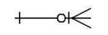
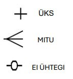

Olemi-suhte diagrammid (ingl. k. ERD ehk Entity Relationship Diagram) on kõige laiemalt levinud metoodika andmemudelite koostamiseks ja kirjelduste esitamiseks. Need näitavad andmebaaside loogilist struktuuri. Nendes kajastuvad suhted erinevate andmebaasiobjektide vahel vastavalt spetsiifilisele kontekstile. Need on olulised äriloogika protsesside kirjeldamiseks ning on aluseks paljudele rakendustele.
Nendes on ühendatud:

Infoloogilistes mudelites koosneb ERD omavahel seostatud olemitest, mida tähistavad vaid ristküliku sisse kirjutatud olemite semantilised nimed:
Peale andmemudeli semantilise mudeli koostamist viiakse see andmeloogilisele tasemele. Andmeloogilise modelleerimise käigus projekteeritakse olemite sisemine struktuur, mis koosneb olemi omadustest ja mille väljenduseks ERD-mudelis on olemi atribuudid:
Joonisel on näha, et kõikidele atribuutidele on lisatud andmetüübid, pikkused ja NULL/NOT NULL piirang, mis määrab, kas antud atribuut võib olla mõnes kirjes tühi (NULL) või mitte (NOT NULL).
Enamus kasutatavatest seostest olemite vahel on "üks-mitmesed" seosed (üks-null, üks-mitu):
Igal komponendil on selle suhte kujutise peal oma kindel tähendus:
Nendest komponentidest saab kokku panna mitmeid erinevaid kombinatsioone, millel on igaühel oma eri tähendus.
Skeemil on kirjeldatud inimene (inimesed), kellele kohta on teada igal juhul vähemalt üks aadress, aga tema kohta võib neid olla teada ka mitu.
Skeemil on kirjeldatud inimene (inimesed), kes võib eksisteerida nii, et tema kohta pole teada ühtegi aadressi.
Skeemil on kirjeldatud inimene (inimesed), kellele kohta on teada igal juhul vähemalt üks aadress, aga tema kohta võib neid olla teada ka mitu. On võimalik, et aadress eksisteerib iseseisvalt ilma, et ta oleks seostatud ühegi isikuga.
Skeemil on kirjeldatud inimene (inimesed), kes võib eksisteerida nii, et tema kohta pole teada ühtegi aadressi. Me võime tema kohta siiski teada ühte või enamat aadressi. Aadress võib eksisteerida ka iseseisvalt ilma, et ta oleks seostatud isikuga.
Võidakse kasutada skeemi joonistamise väga varajases staadiumis tähistamaks seda, et kõik ei ole veel lõpuni läbi mõeldud. Seose otsas “üks” puudub “kriips”, mis tähistab “ühte” ja seega on seos määratlemata (olenemata sellest , mis on seose “mitmeses” otsas).
Tegemist on seosega, mida kunagi ei eksisteeri, kuna tema otsas “üks” eksisteerib ainult variant, kus seos puudub.
Võtmetunnused on väärtused, mis identifitseerivad olemi üheselt ning mille abil on võimalik kindlaks teha, millise olemiga parasjagu tegu on.
Primaarvõti on minimaalne tunnuste kogum, mille abil olemit identifitseerida saab. Päriselu kontekstis oleks see näiteks isikukood Eesti riigi kodaniku puhul.
Kui võti sisaldab ühte atribuuti, siis nimetatakse seda lihtvõtmeks (ingl. k. simple key).
Kui võti sisaldab mitu atribuuti, siis nimetatakse seda liitvõtmeks (ingl. k. composite key).
Seose loomisel kahe tabeli vahel toimub nii, et seose "üks" poolses otsas oleva olemi primaarvõtme väli kantakse üle suhte "mitu" poolsesse tabelisse. Näiteks tabeli ISIK primaarvõti on olemas ka tabelis AADRESS, kuid välisvõtmena (FK - foreign key):